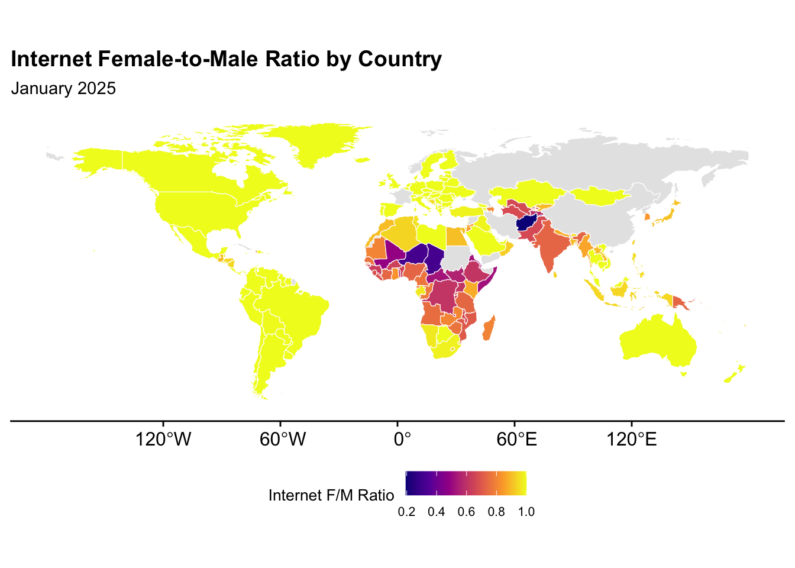
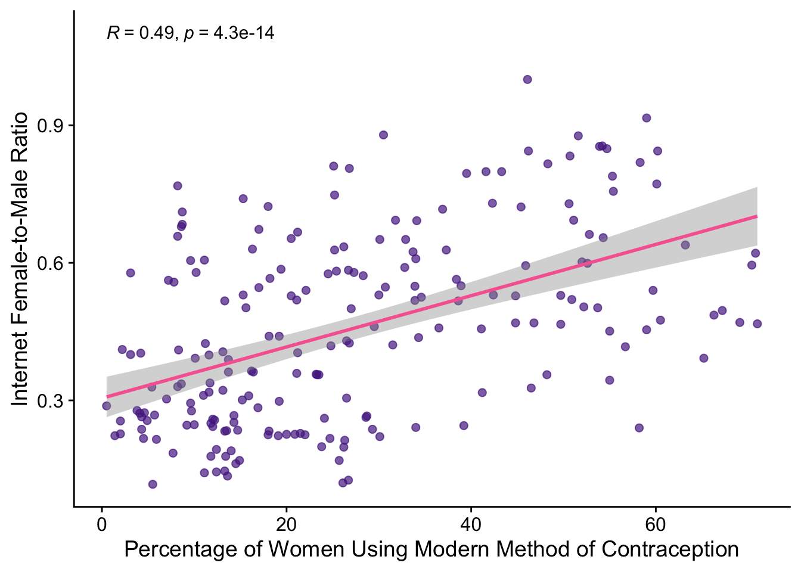

Tutorial 3: Retrieving digital gender gaps estimates from DGG web API
Author
Jiaxuan Li, Ridhi Kashyap
Published
July 3, 2025
Retrieving digital gender gaps estimates from DGG web API
In this part of the tutorial, we demonstrate how to access and retrieve digital gender gap indicators generated from the Digital Gender Gaps projects using our web API. This API provides a way to automate data requests for individual countries, specific dates, or bulk downloads.
## Uncomment below line if you haven't installed relevant packages # install.packages("tidyverse")# install.packages("httr")# install.packages("jsonlite")# install.packages("countrycode")# install.packages("sf")# install.packages("rnaturalearth")# install.packages("rnaturalearthdata")# install.packages("cowplot")# install.packages("scales")# install.packages("ggpubr")library(tidyverse)
Warning: package 'ggplot2' was built under R version 4.4.1
Warning: package 'tibble' was built under R version 4.4.1
Warning: package 'purrr' was built under R version 4.4.1
Warning: package 'lubridate' was built under R version 4.4.1
library(httr)library(jsonlite)
Warning: package 'jsonlite' was built under R version 4.4.1
library(countrycode)
Warning: package 'countrycode' was built under R version 4.4.1
library(sf)
Warning: package 'sf' was built under R version 4.4.1
Warning: package 'scales' was built under R version 4.4.1
library(ggpubr)
1 Retrieving national-level digital gender gaps (with dates)
1.1 Single country download
In this example, we request data for Côte d’Ivoire (country code: CIV) between January 2019 and January 2024. The API returns a nested JSON structure, where each entry is organized by date and contains multiple indicators (such as mobile_men, internet_fm_ratio, etc.), each with a predicted value and an associated error estimate.
To make this data usable for statistical analysis or visualization, we use R’s purrr::map_dfr() to flatten the nested list into a single data frame, where each row represents a unique combination of date and indicator.
response <-GET(url =paste0("http://3.11.85.207/api/v2/download_national_data_with_dates"),query =list(start_date ="2019-01",end_date ="2024-01",country ="CIV" ))# Parse the response from the API as a listdata <-content(response, as ="parsed")civ_df <-map_dfr(names(data), function(country) { country_data <- data[[country]]map_dfr(names(country_data), function(date) { indicators <- country_data[[date]]map_dfr(names(indicators), function(ind) { entry <- indicators[[ind]]data.frame(gid_0 = country,date = date,indicator = ind,predicted =if (!is.null(entry$predicted)) entry$predicted elseNA,predicted_error =if (!is.null(entry$predicted_error)) entry$predicted_error elseNA,stringsAsFactors =FALSE ) }) })})civ_df
In this section, we demonstrate how to automate the download and parsing process for multiple countries using R. Since we cannot directly pass a country-code vector to the argument, we will use a for loop to iterate over a vector of ISO3 country codes, send an API request for each one, and parse the nested JSON response into a tidy, unified data frame.
# Vector of ISO3 country codes (countries that we are interested in)countries <-c("AFG", "BRA", "COD", "FRA","IND", "JPN", "NGA", "SAU", "SWE","USA", "ZAF") # Initialize empty list to store all country resultsall_data <-list()# Loop through each countryfor (code in countries) {# Make API request for each country response <-GET(url ="http://3.11.85.207/api/v2/download_national_data_with_dates",query =list(start_date ="2023-01",end_date ="2024-01",country = code ) )# If request is successfulif (status_code(response) ==200) {# Parse response as structured list data <-content(response, as ="parsed")# Check if data exists for the countryif (!is.null(data[[code]])) {# Flatten JSON: loop over dates and indicators df <-map_dfr(names(data[[code]]), function(date) { indicators <- data[[code]][[date]]map_dfr(names(indicators), function(ind) { entry <- indicators[[ind]]data.frame(date = date,indicator = ind,predicted =if (!is.null(entry$predicted)) entry$predicted elseNA,predicted_error =if (!is.null(entry$predicted_error)) entry$predicted_error elseNA,gid_0 = code,stringsAsFactors =FALSE ) }) }) all_data[[code]] <- df } else {warning(paste("No data for country:", code)) } } else {warning(paste("Request failed for country:", code)) }}selected_countries_df <-bind_rows(all_data)selected_countries_df
date indicator predicted predicted_error gid_0
1 2023-01 mobile_women 0.306 0.054 AFG
2 2023-01 mobile_men 0.776 0.049 AFG
3 2023-01 mobile_fm_ratio 0.448 0.041 AFG
4 2023-01 internet_men 0.235 0.055 AFG
5 2023-01 internet_women NA 0.057 AFG
6 2023-01 internet_fm_ratio 0.107 0.053 AFG
7 2023-02 internet_fm_ratio 0.107 0.053 AFG
8 2023-02 internet_women NA 0.057 AFG
9 2023-02 internet_men 0.235 0.055 AFG
10 2023-02 mobile_fm_ratio 0.448 0.041 AFG
11 2023-02 mobile_women 0.306 0.054 AFG
12 2023-02 mobile_men 0.776 0.049 AFG
13 2023-03 mobile_men 0.781 0.049 AFG
14 2023-03 internet_fm_ratio 0.112 0.053 AFG
15 2023-03 internet_women NA 0.057 AFG
16 2023-03 internet_men 0.240 0.055 AFG
17 2023-03 mobile_fm_ratio 0.451 0.041 AFG
18 2023-03 mobile_women 0.312 0.054 AFG
19 2023-04 internet_fm_ratio 0.127 0.053 AFG
20 2023-04 internet_women NA 0.057 AFG
21 2023-04 internet_men 0.253 0.055 AFG
22 2023-04 mobile_fm_ratio 0.460 0.041 AFG
23 2023-04 mobile_women 0.329 0.054 AFG
24 2023-04 mobile_men 0.795 0.049 AFG
25 2023-05 mobile_women 0.345 0.054 AFG
26 2023-05 internet_women NA 0.057 AFG
27 2023-05 mobile_men 0.808 0.049 AFG
28 2023-05 internet_fm_ratio 0.141 0.053 AFG
29 2023-05 internet_men 0.266 0.055 AFG
30 2023-05 mobile_fm_ratio 0.469 0.041 AFG
31 2023-06 mobile_women 0.353 0.054 AFG
32 2023-06 internet_fm_ratio 0.147 0.053 AFG
33 2023-06 internet_women NA 0.057 AFG
34 2023-06 internet_men 0.272 0.055 AFG
35 2023-06 mobile_fm_ratio 0.472 0.041 AFG
36 2023-06 mobile_men 0.815 0.049 AFG
37 2023-07 mobile_women 0.310 0.054 AFG
38 2023-07 internet_women NA 0.057 AFG
39 2023-07 internet_fm_ratio 0.110 0.053 AFG
40 2023-07 internet_men 0.238 0.055 AFG
41 2023-07 mobile_fm_ratio 0.449 0.041 AFG
42 2023-07 mobile_men 0.779 0.049 AFG
43 2023-08 internet_men 0.236 0.055 AFG
44 2023-08 mobile_men 0.777 0.049 AFG
45 2023-08 internet_fm_ratio 0.108 0.053 AFG
46 2023-08 mobile_women 0.307 0.054 AFG
47 2023-08 mobile_fm_ratio 0.448 0.041 AFG
48 2023-08 internet_women NA 0.057 AFG
49 2023-09 internet_women NA 0.057 AFG
50 2023-09 internet_fm_ratio 0.110 0.053 AFG
51 2023-09 internet_men 0.238 0.055 AFG
52 2023-09 mobile_fm_ratio 0.449 0.041 AFG
53 2023-09 mobile_women 0.309 0.054 AFG
54 2023-09 mobile_men 0.779 0.049 AFG
55 2023-10 internet_fm_ratio 0.129 0.053 AFG
56 2023-10 mobile_women 0.333 0.054 AFG
57 2023-10 mobile_fm_ratio 0.461 0.041 AFG
58 2023-10 mobile_men 0.799 0.049 AFG
59 2023-10 internet_men 0.257 0.055 AFG
60 2023-10 internet_women NA 0.057 AFG
61 2023-11 internet_men 0.224 0.055 AFG
62 2023-11 internet_women NA 0.057 AFG
63 2023-11 internet_fm_ratio 0.095 0.053 AFG
64 2023-11 mobile_fm_ratio 0.440 0.041 AFG
65 2023-11 mobile_women 0.292 0.054 AFG
66 2023-11 mobile_men 0.764 0.049 AFG
67 2023-12 mobile_men 0.769 0.049 AFG
68 2023-12 mobile_women 0.298 0.054 AFG
69 2023-12 mobile_fm_ratio 0.443 0.041 AFG
70 2023-12 internet_women NA 0.057 AFG
71 2023-12 internet_fm_ratio 0.100 0.053 AFG
72 2023-12 internet_men 0.228 0.055 AFG
73 2024-01 mobile_women 0.330 0.054 AFG
74 2024-01 mobile_men 0.795 0.049 AFG
75 2024-01 mobile_fm_ratio 0.460 0.041 AFG
76 2024-01 internet_men 0.268 0.055 AFG
77 2024-01 internet_women NA 0.057 AFG
78 2024-01 internet_fm_ratio 0.130 0.053 AFG
79 2023-01 mobile_men 0.828 0.079 BRA
80 2023-01 internet_fm_ratio 1.000 0.085 BRA
81 2023-01 internet_women 0.799 0.091 BRA
82 2023-01 internet_men 0.785 0.089 BRA
83 2023-01 mobile_fm_ratio 1.000 0.067 BRA
84 2023-01 mobile_women 0.867 0.087 BRA
85 2023-02 mobile_men 0.829 0.079 BRA
86 2023-02 internet_fm_ratio 1.000 0.085 BRA
87 2023-02 internet_women 0.799 0.091 BRA
88 2023-02 internet_men 0.786 0.089 BRA
89 2023-02 mobile_fm_ratio 1.000 0.067 BRA
90 2023-02 mobile_women 0.868 0.087 BRA
91 2023-03 mobile_men 0.831 0.079 BRA
92 2023-03 mobile_women 0.869 0.087 BRA
93 2023-03 mobile_fm_ratio 1.000 0.067 BRA
94 2023-03 internet_men 0.787 0.089 BRA
95 2023-03 internet_women 0.799 0.091 BRA
96 2023-03 internet_fm_ratio 1.000 0.085 BRA
97 2023-04 internet_fm_ratio 1.000 0.085 BRA
98 2023-04 mobile_men 0.833 0.079 BRA
99 2023-04 mobile_women 0.872 0.087 BRA
100 2023-04 mobile_fm_ratio 1.000 0.067 BRA
101 2023-04 internet_men 0.791 0.089 BRA
102 2023-04 internet_women 0.802 0.091 BRA
103 2023-05 mobile_women 0.872 0.087 BRA
104 2023-05 mobile_men 0.834 0.079 BRA
105 2023-05 internet_women 0.804 0.091 BRA
106 2023-05 internet_fm_ratio 1.000 0.085 BRA
107 2023-05 internet_men 0.793 0.089 BRA
108 2023-05 mobile_fm_ratio 1.000 0.067 BRA
109 2023-06 internet_fm_ratio 1.000 0.085 BRA
110 2023-06 mobile_fm_ratio 1.000 0.067 BRA
111 2023-06 internet_women 0.806 0.091 BRA
112 2023-06 internet_men 0.795 0.089 BRA
113 2023-06 mobile_women 0.873 0.087 BRA
114 2023-06 mobile_men 0.835 0.079 BRA
115 2023-07 internet_women 0.788 0.091 BRA
116 2023-07 mobile_men 0.843 0.079 BRA
117 2023-07 mobile_fm_ratio 1.000 0.067 BRA
118 2023-07 internet_men 0.783 0.089 BRA
119 2023-07 internet_fm_ratio 1.000 0.085 BRA
120 2023-07 mobile_women 0.879 0.087 BRA
121 2023-08 mobile_fm_ratio 1.000 0.067 BRA
122 2023-08 internet_women 0.788 0.091 BRA
123 2023-08 mobile_men 0.844 0.079 BRA
124 2023-08 internet_fm_ratio 1.000 0.085 BRA
125 2023-08 mobile_women 0.880 0.087 BRA
126 2023-08 internet_men 0.783 0.089 BRA
127 2023-09 internet_women 0.789 0.091 BRA
128 2023-09 internet_fm_ratio 1.000 0.085 BRA
129 2023-09 internet_men 0.784 0.089 BRA
130 2023-09 mobile_fm_ratio 1.000 0.067 BRA
131 2023-09 mobile_women 0.881 0.087 BRA
132 2023-09 mobile_men 0.845 0.079 BRA
133 2023-10 internet_fm_ratio 1.000 0.085 BRA
134 2023-10 mobile_fm_ratio 1.000 0.067 BRA
135 2023-10 mobile_women 0.878 0.087 BRA
136 2023-10 mobile_men 0.842 0.079 BRA
137 2023-10 internet_men 0.791 0.089 BRA
138 2023-10 internet_women 0.797 0.091 BRA
139 2023-11 internet_men 0.778 0.089 BRA
140 2023-11 internet_women 0.779 0.091 BRA
141 2023-11 internet_fm_ratio 1.000 0.085 BRA
142 2023-11 mobile_fm_ratio 1.000 0.067 BRA
143 2023-11 mobile_women 0.885 0.087 BRA
144 2023-11 mobile_men 0.851 0.079 BRA
145 2023-12 mobile_men 0.850 0.079 BRA
146 2023-12 mobile_women 0.884 0.087 BRA
147 2023-12 mobile_fm_ratio 1.000 0.067 BRA
148 2023-12 internet_men 0.778 0.089 BRA
149 2023-12 internet_women 0.779 0.091 BRA
150 2023-12 internet_fm_ratio 1.000 0.085 BRA
151 2024-01 mobile_women 0.888 0.087 BRA
152 2024-01 mobile_men 0.850 0.079 BRA
153 2024-01 mobile_fm_ratio 1.000 0.067 BRA
154 2024-01 internet_men 0.803 0.089 BRA
155 2024-01 internet_women 0.808 0.091 BRA
156 2024-01 internet_fm_ratio 1.000 0.085 BRA
157 2023-01 mobile_men 0.665 0.070 COD
158 2023-01 internet_fm_ratio 0.554 0.075 COD
159 2023-01 internet_women 0.232 0.082 COD
160 2023-01 internet_men 0.351 0.079 COD
161 2023-01 mobile_fm_ratio 0.751 0.059 COD
162 2023-01 mobile_women 0.503 0.078 COD
163 2023-02 mobile_men 0.665 0.070 COD
164 2023-02 internet_fm_ratio 0.554 0.075 COD
165 2023-02 internet_women 0.232 0.082 COD
166 2023-02 internet_men 0.351 0.079 COD
167 2023-02 mobile_fm_ratio 0.751 0.059 COD
168 2023-02 mobile_women 0.503 0.078 COD
169 2023-03 mobile_men 0.667 0.070 COD
170 2023-03 mobile_women 0.506 0.078 COD
171 2023-03 mobile_fm_ratio 0.753 0.059 COD
172 2023-03 internet_men 0.353 0.079 COD
173 2023-03 internet_women 0.234 0.082 COD
174 2023-03 internet_fm_ratio 0.557 0.075 COD
175 2023-04 internet_fm_ratio 0.561 0.075 COD
176 2023-04 mobile_men 0.671 0.070 COD
177 2023-04 mobile_women 0.511 0.078 COD
178 2023-04 mobile_fm_ratio 0.755 0.059 COD
179 2023-04 internet_men 0.358 0.079 COD
180 2023-04 internet_women 0.238 0.082 COD
181 2023-05 mobile_women 0.515 0.078 COD
182 2023-05 mobile_men 0.675 0.070 COD
183 2023-05 internet_women 0.241 0.082 COD
184 2023-05 internet_fm_ratio 0.564 0.075 COD
185 2023-05 internet_men 0.362 0.079 COD
186 2023-05 mobile_fm_ratio 0.757 0.059 COD
187 2023-06 internet_fm_ratio 0.566 0.075 COD
188 2023-06 mobile_fm_ratio 0.758 0.059 COD
189 2023-06 internet_women 0.243 0.082 COD
190 2023-06 internet_men 0.364 0.079 COD
191 2023-06 mobile_women 0.517 0.078 COD
192 2023-06 mobile_men 0.677 0.070 COD
193 2023-07 internet_women 0.233 0.082 COD
194 2023-07 mobile_men 0.667 0.070 COD
195 2023-07 mobile_fm_ratio 0.752 0.059 COD
196 2023-07 internet_men 0.353 0.079 COD
197 2023-07 internet_fm_ratio 0.556 0.075 COD
198 2023-07 mobile_women 0.505 0.078 COD
199 2023-08 mobile_fm_ratio 0.754 0.059 COD
200 2023-08 internet_women 0.234 0.082 COD
201 2023-08 mobile_men 0.667 0.070 COD
202 2023-08 internet_fm_ratio 0.558 0.075 COD
203 2023-08 mobile_women 0.506 0.078 COD
204 2023-08 internet_men 0.353 0.079 COD
205 2023-09 internet_fm_ratio 0.561 0.075 COD
206 2023-09 internet_women 0.236 0.082 COD
207 2023-09 internet_men 0.355 0.079 COD
208 2023-09 mobile_fm_ratio 0.755 0.059 COD
209 2023-09 mobile_women 0.509 0.078 COD
210 2023-09 mobile_men 0.669 0.070 COD
211 2023-10 internet_fm_ratio 0.568 0.075 COD
212 2023-10 mobile_fm_ratio 0.760 0.059 COD
213 2023-10 mobile_women 0.517 0.078 COD
214 2023-10 internet_men 0.362 0.079 COD
215 2023-10 mobile_men 0.675 0.070 COD
216 2023-10 internet_women 0.242 0.082 COD
217 2023-11 internet_men 0.351 0.079 COD
218 2023-11 internet_women 0.233 0.082 COD
219 2023-11 internet_fm_ratio 0.558 0.075 COD
220 2023-11 mobile_fm_ratio 0.754 0.059 COD
221 2023-11 mobile_women 0.505 0.078 COD
222 2023-11 mobile_men 0.666 0.070 COD
223 2023-12 mobile_men 0.667 0.070 COD
224 2023-12 mobile_women 0.507 0.078 COD
225 2023-12 mobile_fm_ratio 0.755 0.059 COD
226 2023-12 internet_men 0.353 0.079 COD
227 2023-12 internet_women 0.234 0.082 COD
228 2023-12 internet_fm_ratio 0.561 0.075 COD
229 2024-01 mobile_women 0.523 0.078 COD
230 2024-01 mobile_men 0.679 0.070 COD
231 2024-01 mobile_fm_ratio 0.764 0.059 COD
232 2024-01 internet_men 0.379 0.079 COD
233 2024-01 internet_women 0.260 0.082 COD
234 2024-01 internet_fm_ratio 0.578 0.075 COD
235 2023-01 mobile_men 1.000 0.078 FRA
236 2023-01 internet_fm_ratio 1.000 0.083 FRA
237 2023-01 internet_women 0.970 0.090 FRA
238 2023-01 internet_men 0.976 0.088 FRA
239 2023-01 mobile_fm_ratio 1.000 0.066 FRA
240 2023-01 mobile_women 1.000 0.086 FRA
241 2023-02 mobile_women 1.000 0.086 FRA
242 2023-02 mobile_men 1.000 0.078 FRA
243 2023-02 internet_fm_ratio 1.000 0.083 FRA
244 2023-02 internet_women 0.971 0.090 FRA
245 2023-02 internet_men 0.978 0.088 FRA
246 2023-02 mobile_fm_ratio 1.000 0.066 FRA
247 2023-03 mobile_men 1.000 0.078 FRA
248 2023-03 mobile_women 1.000 0.086 FRA
249 2023-03 mobile_fm_ratio 1.000 0.066 FRA
250 2023-03 internet_men 0.980 0.088 FRA
251 2023-03 internet_women 0.972 0.090 FRA
252 2023-03 internet_fm_ratio 1.000 0.083 FRA
253 2023-04 internet_fm_ratio 1.000 0.083 FRA
254 2023-04 mobile_men 1.000 0.078 FRA
255 2023-04 mobile_women 1.000 0.086 FRA
256 2023-04 mobile_fm_ratio 1.000 0.066 FRA
257 2023-04 internet_men 0.983 0.088 FRA
258 2023-04 internet_women 0.975 0.090 FRA
259 2023-05 mobile_women 1.000 0.086 FRA
260 2023-05 mobile_men 1.000 0.078 FRA
261 2023-05 internet_women 0.977 0.090 FRA
262 2023-05 internet_fm_ratio 1.000 0.083 FRA
263 2023-05 internet_men 0.984 0.088 FRA
264 2023-05 mobile_fm_ratio 1.000 0.066 FRA
265 2023-06 internet_fm_ratio 1.000 0.083 FRA
266 2023-06 mobile_fm_ratio 1.000 0.066 FRA
267 2023-06 internet_women 0.962 0.090 FRA
268 2023-06 internet_men 0.954 0.088 FRA
269 2023-06 mobile_women 1.000 0.086 FRA
270 2023-06 mobile_men 0.980 0.078 FRA
271 2023-07 internet_fm_ratio 1.000 0.083 FRA
272 2023-07 internet_women 0.940 0.090 FRA
273 2023-07 mobile_women 1.000 0.086 FRA
274 2023-07 mobile_fm_ratio 1.000 0.066 FRA
275 2023-07 internet_men 0.936 0.088 FRA
276 2023-07 mobile_men 0.979 0.078 FRA
277 2023-08 internet_men 0.935 0.088 FRA
278 2023-08 internet_fm_ratio 1.000 0.083 FRA
279 2023-08 mobile_men 0.979 0.078 FRA
280 2023-08 mobile_women 1.000 0.086 FRA
281 2023-08 mobile_fm_ratio 1.000 0.066 FRA
282 2023-08 internet_women 0.939 0.090 FRA
283 2023-09 internet_fm_ratio 1.000 0.083 FRA
284 2023-09 internet_women 0.957 0.090 FRA
285 2023-09 internet_men 0.968 0.088 FRA
286 2023-09 mobile_fm_ratio 1.000 0.066 FRA
287 2023-09 mobile_women 1.000 0.086 FRA
288 2023-09 mobile_men 1.000 0.078 FRA
289 2023-10 internet_fm_ratio 1.000 0.083 FRA
290 2023-10 mobile_fm_ratio 1.000 0.066 FRA
291 2023-10 mobile_women 1.000 0.086 FRA
292 2023-10 internet_men 0.974 0.088 FRA
293 2023-10 mobile_men 1.000 0.078 FRA
294 2023-10 internet_women 0.966 0.090 FRA
295 2023-11 internet_men 0.953 0.088 FRA
296 2023-11 internet_women 0.943 0.090 FRA
297 2023-11 internet_fm_ratio 1.000 0.083 FRA
298 2023-11 mobile_fm_ratio 1.000 0.066 FRA
299 2023-11 mobile_women 1.000 0.086 FRA
300 2023-11 mobile_men 1.000 0.078 FRA
301 2023-12 mobile_men 1.000 0.078 FRA
302 2023-12 mobile_women 1.000 0.086 FRA
303 2023-12 mobile_fm_ratio 1.000 0.066 FRA
304 2023-12 internet_men 0.952 0.088 FRA
305 2023-12 internet_women 0.941 0.090 FRA
306 2023-12 internet_fm_ratio 1.000 0.083 FRA
307 2024-01 mobile_women 1.000 0.086 FRA
308 2024-01 mobile_men 1.000 0.078 FRA
309 2024-01 mobile_fm_ratio 1.000 0.066 FRA
310 2024-01 internet_men 0.981 0.088 FRA
311 2024-01 internet_women 0.971 0.090 FRA
312 2024-01 internet_fm_ratio 1.000 0.083 FRA
313 2023-01 mobile_women 0.767 0.074 IND
314 2023-01 internet_fm_ratio 0.650 0.072 IND
315 2023-01 internet_women 0.508 0.078 IND
316 2023-01 internet_men 0.686 0.076 IND
317 2023-01 mobile_fm_ratio 0.804 0.057 IND
318 2023-01 mobile_men 0.959 0.067 IND
319 2023-02 mobile_men 0.958 0.067 IND
320 2023-02 internet_fm_ratio 0.651 0.072 IND
321 2023-02 internet_women 0.508 0.078 IND
322 2023-02 internet_men 0.686 0.076 IND
323 2023-02 mobile_fm_ratio 0.804 0.057 IND
324 2023-02 mobile_women 0.767 0.074 IND
325 2023-03 mobile_women 0.775 0.074 IND
326 2023-03 mobile_men 0.964 0.067 IND
327 2023-03 mobile_fm_ratio 0.809 0.057 IND
328 2023-03 internet_men 0.692 0.076 IND
329 2023-03 internet_women 0.513 0.078 IND
330 2023-03 internet_fm_ratio 0.658 0.072 IND
331 2023-04 mobile_men 0.977 0.067 IND
332 2023-04 internet_fm_ratio 0.673 0.072 IND
333 2023-04 mobile_women 0.791 0.074 IND
334 2023-04 mobile_fm_ratio 0.818 0.057 IND
335 2023-04 internet_men 0.706 0.076 IND
336 2023-04 internet_women 0.524 0.078 IND
337 2023-05 mobile_men 0.988 0.067 IND
338 2023-05 internet_women 0.532 0.078 IND
339 2023-05 internet_men 0.717 0.076 IND
340 2023-05 internet_fm_ratio 0.684 0.072 IND
341 2023-05 mobile_fm_ratio 0.825 0.057 IND
342 2023-05 mobile_women 0.804 0.074 IND
343 2023-06 internet_fm_ratio 0.688 0.072 IND
344 2023-06 internet_men 0.721 0.076 IND
345 2023-06 mobile_fm_ratio 0.828 0.057 IND
346 2023-06 mobile_women 0.809 0.074 IND
347 2023-06 mobile_men 0.992 0.067 IND
348 2023-06 internet_women 0.535 0.078 IND
349 2023-07 internet_fm_ratio 0.637 0.072 IND
350 2023-07 internet_women 0.495 0.078 IND
351 2023-07 mobile_women 0.748 0.074 IND
352 2023-07 mobile_fm_ratio 0.796 0.057 IND
353 2023-07 internet_men 0.669 0.076 IND
354 2023-07 mobile_men 0.941 0.067 IND
355 2023-08 internet_women 0.495 0.078 IND
356 2023-08 mobile_men 0.940 0.067 IND
357 2023-08 mobile_women 0.747 0.074 IND
358 2023-08 mobile_fm_ratio 0.795 0.057 IND
359 2023-08 internet_men 0.668 0.076 IND
360 2023-08 internet_fm_ratio 0.636 0.072 IND
361 2023-09 internet_fm_ratio 0.639 0.072 IND
362 2023-09 internet_women 0.496 0.078 IND
363 2023-09 internet_men 0.669 0.076 IND
364 2023-09 mobile_fm_ratio 0.797 0.057 IND
365 2023-09 mobile_women 0.748 0.074 IND
366 2023-09 mobile_men 0.941 0.067 IND
367 2023-10 mobile_men 0.966 0.067 IND
368 2023-10 mobile_women 0.779 0.074 IND
369 2023-10 internet_fm_ratio 0.664 0.072 IND
370 2023-10 internet_women 0.516 0.078 IND
371 2023-10 mobile_fm_ratio 0.813 0.057 IND
372 2023-10 internet_men 0.694 0.076 IND
373 2023-11 internet_men 0.642 0.076 IND
374 2023-11 internet_women 0.475 0.078 IND
375 2023-11 internet_fm_ratio 0.613 0.072 IND
376 2023-11 mobile_men 0.914 0.067 IND
377 2023-11 mobile_women 0.716 0.074 IND
378 2023-11 mobile_fm_ratio 0.781 0.057 IND
379 2023-12 mobile_women 0.719 0.074 IND
380 2023-12 mobile_men 0.916 0.067 IND
381 2023-12 internet_fm_ratio 0.616 0.072 IND
382 2023-12 internet_women 0.477 0.078 IND
383 2023-12 internet_men 0.644 0.076 IND
384 2023-12 mobile_fm_ratio 0.782 0.057 IND
385 2024-01 mobile_fm_ratio 0.804 0.057 IND
386 2024-01 internet_men 0.691 0.076 IND
387 2024-01 mobile_men 0.948 0.067 IND
388 2024-01 mobile_women 0.760 0.074 IND
389 2024-01 internet_women 0.519 0.078 IND
390 2024-01 internet_fm_ratio 0.654 0.072 IND
391 2023-01 mobile_men 0.981 0.077 JPN
392 2023-01 internet_fm_ratio 0.905 0.082 JPN
393 2023-01 internet_women 0.863 0.089 JPN
394 2023-01 internet_men 0.895 0.086 JPN
395 2023-01 mobile_fm_ratio 0.961 0.065 JPN
396 2023-01 mobile_women 0.938 0.084 JPN
397 2023-02 internet_men 0.896 0.086 JPN
398 2023-02 internet_fm_ratio 0.903 0.082 JPN
399 2023-02 internet_women 0.863 0.089 JPN
400 2023-02 mobile_men 0.981 0.077 JPN
401 2023-02 mobile_fm_ratio 0.959 0.065 JPN
402 2023-02 mobile_women 0.937 0.084 JPN
403 2023-03 internet_fm_ratio 0.901 0.082 JPN
404 2023-03 mobile_women 0.937 0.084 JPN
405 2023-03 mobile_fm_ratio 0.958 0.065 JPN
406 2023-03 internet_men 0.896 0.086 JPN
407 2023-03 internet_women 0.863 0.089 JPN
408 2023-03 mobile_men 0.981 0.077 JPN
409 2023-04 mobile_women 0.937 0.084 JPN
410 2023-04 internet_fm_ratio 0.900 0.082 JPN
411 2023-04 internet_women 0.864 0.089 JPN
412 2023-04 internet_men 0.896 0.086 JPN
413 2023-04 mobile_fm_ratio 0.958 0.065 JPN
414 2023-04 mobile_men 0.981 0.077 JPN
415 2023-05 internet_men 0.897 0.086 JPN
416 2023-05 mobile_fm_ratio 0.959 0.065 JPN
417 2023-05 internet_fm_ratio 0.902 0.082 JPN
418 2023-05 mobile_women 0.938 0.084 JPN
419 2023-05 internet_women 0.864 0.089 JPN
420 2023-05 mobile_men 0.982 0.077 JPN
421 2023-06 internet_fm_ratio 0.903 0.082 JPN
422 2023-06 internet_men 0.897 0.086 JPN
423 2023-06 mobile_fm_ratio 0.960 0.065 JPN
424 2023-06 mobile_women 0.939 0.084 JPN
425 2023-06 mobile_men 0.982 0.077 JPN
426 2023-06 internet_women 0.865 0.089 JPN
427 2023-07 internet_women 0.857 0.089 JPN
428 2023-07 mobile_women 0.931 0.084 JPN
429 2023-07 internet_fm_ratio 0.896 0.082 JPN
430 2023-07 internet_men 0.889 0.086 JPN
431 2023-07 mobile_fm_ratio 0.955 0.065 JPN
432 2023-07 mobile_men 0.976 0.077 JPN
433 2023-08 internet_men 0.889 0.086 JPN
434 2023-08 internet_fm_ratio 0.895 0.082 JPN
435 2023-08 mobile_men 0.976 0.077 JPN
436 2023-08 mobile_women 0.930 0.084 JPN
437 2023-08 mobile_fm_ratio 0.954 0.065 JPN
438 2023-08 internet_women 0.857 0.089 JPN
439 2023-09 internet_fm_ratio 0.895 0.082 JPN
440 2023-09 internet_women 0.857 0.089 JPN
441 2023-09 internet_men 0.889 0.086 JPN
442 2023-09 mobile_fm_ratio 0.954 0.065 JPN
443 2023-09 mobile_women 0.930 0.084 JPN
444 2023-09 mobile_men 0.976 0.077 JPN
445 2023-10 mobile_men 0.979 0.077 JPN
446 2023-10 internet_fm_ratio 0.896 0.082 JPN
447 2023-10 internet_women 0.860 0.089 JPN
448 2023-10 mobile_women 0.933 0.084 JPN
449 2023-10 mobile_fm_ratio 0.955 0.065 JPN
450 2023-10 internet_men 0.893 0.086 JPN
451 2023-11 internet_men 0.884 0.086 JPN
452 2023-11 internet_women 0.852 0.089 JPN
453 2023-11 internet_fm_ratio 0.887 0.082 JPN
454 2023-11 mobile_men 0.972 0.077 JPN
455 2023-11 mobile_women 0.924 0.084 JPN
456 2023-11 mobile_fm_ratio 0.950 0.065 JPN
457 2023-12 mobile_women 0.924 0.084 JPN
458 2023-12 mobile_men 0.972 0.077 JPN
459 2023-12 internet_fm_ratio 0.886 0.082 JPN
460 2023-12 internet_women 0.852 0.089 JPN
461 2023-12 internet_men 0.884 0.086 JPN
462 2023-12 mobile_fm_ratio 0.949 0.065 JPN
463 2024-01 mobile_fm_ratio 0.955 0.065 JPN
464 2024-01 internet_men 0.908 0.086 JPN
465 2024-01 mobile_men 0.980 0.077 JPN
466 2024-01 mobile_women 0.935 0.084 JPN
467 2024-01 internet_women 0.876 0.089 JPN
468 2024-01 internet_fm_ratio 0.898 0.082 JPN
469 2023-01 internet_fm_ratio 0.665 0.075 NGA
470 2023-01 mobile_men 0.801 0.070 NGA
471 2023-01 mobile_women 0.664 0.077 NGA
472 2023-01 mobile_fm_ratio 0.821 0.059 NGA
473 2023-01 internet_men 0.489 0.079 NGA
474 2023-01 internet_women 0.371 0.081 NGA
475 2023-02 internet_women 0.373 0.081 NGA
476 2023-02 mobile_men 0.803 0.070 NGA
477 2023-02 mobile_women 0.666 0.077 NGA
478 2023-02 mobile_fm_ratio 0.822 0.059 NGA
479 2023-02 internet_men 0.491 0.079 NGA
480 2023-02 internet_fm_ratio 0.666 0.075 NGA
481 2023-03 internet_men 0.498 0.079 NGA
482 2023-03 mobile_men 0.808 0.070 NGA
483 2023-03 mobile_women 0.672 0.077 NGA
484 2023-03 mobile_fm_ratio 0.825 0.059 NGA
485 2023-03 internet_fm_ratio 0.671 0.075 NGA
486 2023-03 internet_women 0.378 0.081 NGA
487 2023-04 internet_fm_ratio 0.679 0.075 NGA
488 2023-04 mobile_men 0.817 0.070 NGA
489 2023-04 mobile_women 0.683 0.077 NGA
490 2023-04 mobile_fm_ratio 0.831 0.059 NGA
491 2023-04 internet_men 0.511 0.079 NGA
492 2023-04 internet_women 0.389 0.081 NGA
493 2023-05 mobile_fm_ratio 0.834 0.059 NGA
494 2023-05 mobile_men 0.824 0.070 NGA
495 2023-05 mobile_women 0.691 0.077 NGA
496 2023-05 internet_women 0.396 0.081 NGA
497 2023-05 internet_fm_ratio 0.685 0.075 NGA
498 2023-05 internet_men 0.519 0.079 NGA
499 2023-06 mobile_men 0.826 0.070 NGA
500 2023-06 internet_fm_ratio 0.687 0.075 NGA
501 2023-06 internet_women 0.399 0.081 NGA
502 2023-06 internet_men 0.522 0.079 NGA
503 2023-06 mobile_fm_ratio 0.836 0.059 NGA
504 2023-06 mobile_women 0.693 0.077 NGA
505 2023-07 internet_men 0.502 0.079 NGA
506 2023-07 mobile_men 0.811 0.070 NGA
507 2023-07 internet_women 0.381 0.081 NGA
508 2023-07 mobile_women 0.674 0.077 NGA
509 2023-07 mobile_fm_ratio 0.825 0.059 NGA
510 2023-07 internet_fm_ratio 0.670 0.075 NGA
511 2023-08 mobile_men 0.811 0.070 NGA
512 2023-08 internet_fm_ratio 0.671 0.075 NGA
513 2023-08 internet_women 0.381 0.081 NGA
514 2023-08 internet_men 0.502 0.079 NGA
515 2023-08 mobile_fm_ratio 0.825 0.059 NGA
516 2023-08 mobile_women 0.674 0.077 NGA
517 2023-09 internet_fm_ratio 0.673 0.075 NGA
518 2023-09 mobile_men 0.813 0.070 NGA
519 2023-09 mobile_women 0.677 0.077 NGA
520 2023-09 mobile_fm_ratio 0.827 0.059 NGA
521 2023-09 internet_men 0.505 0.079 NGA
522 2023-09 internet_women 0.383 0.081 NGA
523 2023-10 mobile_women 0.688 0.077 NGA
524 2023-10 internet_fm_ratio 0.682 0.075 NGA
525 2023-10 mobile_fm_ratio 0.833 0.059 NGA
526 2023-10 internet_men 0.516 0.079 NGA
527 2023-10 internet_women 0.393 0.081 NGA
528 2023-10 mobile_men 0.822 0.070 NGA
529 2023-11 internet_men 0.498 0.079 NGA
530 2023-11 mobile_men 0.808 0.070 NGA
531 2023-11 mobile_women 0.671 0.077 NGA
532 2023-11 mobile_fm_ratio 0.824 0.059 NGA
533 2023-11 internet_women 0.378 0.081 NGA
534 2023-11 internet_fm_ratio 0.669 0.075 NGA
535 2023-12 mobile_men 0.810 0.070 NGA
536 2023-12 internet_women 0.381 0.081 NGA
537 2023-12 mobile_women 0.675 0.077 NGA
538 2023-12 mobile_fm_ratio 0.828 0.059 NGA
539 2023-12 internet_men 0.501 0.079 NGA
540 2023-12 internet_fm_ratio 0.675 0.075 NGA
541 2024-01 internet_fm_ratio 0.697 0.075 NGA
542 2024-01 mobile_fm_ratio 0.841 0.059 NGA
543 2024-01 mobile_women 0.696 0.077 NGA
544 2024-01 mobile_men 0.824 0.070 NGA
545 2024-01 internet_women 0.413 0.081 NGA
546 2024-01 internet_men 0.534 0.079 NGA
547 2023-01 internet_fm_ratio 0.911 0.079 SAU
548 2023-01 mobile_men 1.000 0.073 SAU
549 2023-01 mobile_women 1.000 0.081 SAU
550 2023-01 mobile_fm_ratio 0.970 0.062 SAU
551 2023-01 internet_men 1.000 0.083 SAU
552 2023-01 internet_women 0.918 0.085 SAU
553 2023-02 internet_women 0.919 0.085 SAU
554 2023-02 mobile_men 1.000 0.073 SAU
555 2023-02 mobile_women 1.000 0.081 SAU
556 2023-02 mobile_fm_ratio 0.971 0.062 SAU
557 2023-02 internet_men 1.000 0.083 SAU
558 2023-02 internet_fm_ratio 0.912 0.079 SAU
559 2023-03 internet_women 0.927 0.085 SAU
560 2023-03 mobile_men 1.000 0.073 SAU
561 2023-03 mobile_women 1.000 0.081 SAU
562 2023-03 mobile_fm_ratio 0.976 0.062 SAU
563 2023-03 internet_men 1.000 0.083 SAU
564 2023-03 internet_fm_ratio 0.920 0.079 SAU
565 2023-04 mobile_men 1.000 0.073 SAU
566 2023-04 mobile_women 1.000 0.081 SAU
567 2023-04 mobile_fm_ratio 0.988 0.062 SAU
568 2023-04 internet_men 1.000 0.083 SAU
569 2023-04 internet_women 0.943 0.085 SAU
570 2023-04 internet_fm_ratio 0.940 0.079 SAU
571 2023-05 mobile_men 1.000 0.073 SAU
572 2023-05 internet_women 0.953 0.085 SAU
573 2023-05 internet_fm_ratio 0.953 0.079 SAU
574 2023-05 internet_men 1.000 0.083 SAU
575 2023-05 mobile_fm_ratio 0.996 0.062 SAU
576 2023-05 mobile_women 1.000 0.081 SAU
577 2023-06 mobile_men 1.000 0.073 SAU
578 2023-06 internet_fm_ratio 0.957 0.079 SAU
579 2023-06 internet_women 0.957 0.085 SAU
580 2023-06 internet_men 1.000 0.083 SAU
581 2023-06 mobile_fm_ratio 0.999 0.062 SAU
582 2023-06 mobile_women 1.000 0.081 SAU
583 2023-07 internet_fm_ratio 0.906 0.079 SAU
584 2023-07 internet_women 0.912 0.085 SAU
585 2023-07 internet_men 1.000 0.083 SAU
586 2023-07 mobile_fm_ratio 0.967 0.062 SAU
587 2023-07 mobile_women 1.000 0.081 SAU
588 2023-07 mobile_men 1.000 0.073 SAU
589 2023-08 internet_fm_ratio 0.904 0.079 SAU
590 2023-08 internet_men 1.000 0.083 SAU
591 2023-08 mobile_fm_ratio 0.966 0.062 SAU
592 2023-08 mobile_women 1.000 0.081 SAU
593 2023-08 mobile_men 1.000 0.073 SAU
594 2023-08 internet_women 0.911 0.085 SAU
595 2023-09 internet_fm_ratio 0.906 0.079 SAU
596 2023-09 mobile_men 1.000 0.073 SAU
597 2023-09 mobile_women 1.000 0.081 SAU
598 2023-09 mobile_fm_ratio 0.967 0.062 SAU
599 2023-09 internet_men 1.000 0.083 SAU
600 2023-09 internet_women 0.912 0.085 SAU
601 2023-10 mobile_men 1.000 0.073 SAU
602 2023-10 mobile_women 1.000 0.081 SAU
603 2023-10 internet_women 0.934 0.085 SAU
604 2023-10 internet_men 1.000 0.083 SAU
605 2023-10 mobile_fm_ratio 0.983 0.062 SAU
606 2023-10 internet_fm_ratio 0.932 0.079 SAU
607 2023-11 mobile_fm_ratio 0.951 0.062 SAU
608 2023-11 internet_men 0.993 0.083 SAU
609 2023-11 mobile_women 1.000 0.081 SAU
610 2023-11 internet_fm_ratio 0.882 0.079 SAU
611 2023-11 mobile_men 1.000 0.073 SAU
612 2023-11 internet_women 0.890 0.085 SAU
613 2023-12 mobile_men 1.000 0.073 SAU
614 2023-12 mobile_women 1.000 0.081 SAU
615 2023-12 mobile_fm_ratio 0.956 0.062 SAU
616 2023-12 internet_men 1.000 0.083 SAU
617 2023-12 internet_fm_ratio 0.889 0.079 SAU
618 2023-12 internet_women 0.896 0.085 SAU
619 2024-01 mobile_fm_ratio 0.981 0.062 SAU
620 2024-01 internet_fm_ratio 0.931 0.079 SAU
621 2024-01 internet_women 0.944 0.085 SAU
622 2024-01 mobile_men 1.000 0.073 SAU
623 2024-01 mobile_women 1.000 0.081 SAU
624 2024-01 internet_men 1.000 0.083 SAU
625 2023-01 internet_fm_ratio 1.000 0.083 SWE
626 2023-01 mobile_men 1.000 0.078 SWE
627 2023-01 mobile_women 1.000 0.086 SWE
628 2023-01 mobile_fm_ratio 1.000 0.065 SWE
629 2023-01 internet_men 1.000 0.087 SWE
630 2023-01 internet_women 1.000 0.090 SWE
631 2023-02 internet_women 1.000 0.090 SWE
632 2023-02 mobile_men 1.000 0.078 SWE
633 2023-02 mobile_women 1.000 0.086 SWE
634 2023-02 mobile_fm_ratio 1.000 0.065 SWE
635 2023-02 internet_men 1.000 0.087 SWE
636 2023-02 internet_fm_ratio 1.000 0.083 SWE
637 2023-03 internet_fm_ratio 1.000 0.083 SWE
638 2023-03 mobile_men 1.000 0.078 SWE
639 2023-03 mobile_women 1.000 0.086 SWE
640 2023-03 internet_men 1.000 0.087 SWE
641 2023-03 internet_women 1.000 0.090 SWE
642 2023-03 mobile_fm_ratio 1.000 0.065 SWE
643 2023-04 mobile_men 1.000 0.078 SWE
644 2023-04 mobile_women 1.000 0.086 SWE
645 2023-04 mobile_fm_ratio 1.000 0.065 SWE
646 2023-04 internet_men 1.000 0.087 SWE
647 2023-04 internet_women 1.000 0.090 SWE
648 2023-04 internet_fm_ratio 1.000 0.083 SWE
649 2023-05 mobile_men 1.000 0.078 SWE
650 2023-05 internet_women 1.000 0.090 SWE
651 2023-05 internet_men 1.000 0.087 SWE
652 2023-05 internet_fm_ratio 1.000 0.083 SWE
653 2023-05 mobile_fm_ratio 1.000 0.065 SWE
654 2023-05 mobile_women 1.000 0.086 SWE
655 2023-06 mobile_men 1.000 0.078 SWE
656 2023-06 internet_fm_ratio 1.000 0.083 SWE
657 2023-06 internet_women 1.000 0.090 SWE
658 2023-06 internet_men 1.000 0.087 SWE
659 2023-06 mobile_fm_ratio 1.000 0.065 SWE
660 2023-06 mobile_women 1.000 0.086 SWE
661 2023-07 mobile_women 1.000 0.086 SWE
662 2023-07 internet_fm_ratio 1.000 0.083 SWE
663 2023-07 internet_women 0.997 0.090 SWE
664 2023-07 internet_men 0.993 0.087 SWE
665 2023-07 mobile_fm_ratio 1.000 0.065 SWE
666 2023-07 mobile_men 1.000 0.078 SWE
667 2023-08 internet_fm_ratio 1.000 0.083 SWE
668 2023-08 internet_men 0.996 0.087 SWE
669 2023-08 mobile_fm_ratio 1.000 0.065 SWE
670 2023-08 mobile_women 1.000 0.086 SWE
671 2023-08 mobile_men 1.000 0.078 SWE
672 2023-08 internet_women 0.999 0.090 SWE
673 2023-09 internet_fm_ratio 1.000 0.083 SWE
674 2023-09 mobile_men 1.000 0.078 SWE
675 2023-09 mobile_women 1.000 0.086 SWE
676 2023-09 mobile_fm_ratio 1.000 0.065 SWE
677 2023-09 internet_men 1.000 0.087 SWE
678 2023-09 internet_women 1.000 0.090 SWE
679 2023-10 mobile_men 1.000 0.078 SWE
680 2023-10 mobile_women 1.000 0.086 SWE
681 2023-10 internet_women 1.000 0.090 SWE
682 2023-10 internet_men 1.000 0.087 SWE
683 2023-10 mobile_fm_ratio 1.000 0.065 SWE
684 2023-10 internet_fm_ratio 1.000 0.083 SWE
685 2023-11 mobile_fm_ratio 1.000 0.065 SWE
686 2023-11 internet_men 0.998 0.087 SWE
687 2023-11 mobile_women 1.000 0.086 SWE
688 2023-11 internet_fm_ratio 1.000 0.083 SWE
689 2023-11 mobile_men 1.000 0.078 SWE
690 2023-11 internet_women 0.998 0.090 SWE
691 2023-12 internet_fm_ratio 1.000 0.083 SWE
692 2023-12 mobile_women 1.000 0.086 SWE
693 2023-12 mobile_fm_ratio 1.000 0.065 SWE
694 2023-12 internet_men 0.996 0.087 SWE
695 2023-12 mobile_men 1.000 0.078 SWE
696 2023-12 internet_women 0.995 0.090 SWE
697 2024-01 mobile_fm_ratio 1.000 0.065 SWE
698 2024-01 internet_fm_ratio 1.000 0.083 SWE
699 2024-01 internet_women 1.000 0.090 SWE
700 2024-01 mobile_men 1.000 0.078 SWE
701 2024-01 mobile_women 1.000 0.086 SWE
702 2024-01 internet_men 1.000 0.087 SWE
703 2023-01 mobile_fm_ratio 1.000 0.067 USA
704 2023-01 mobile_men 0.980 0.080 USA
705 2023-01 mobile_women 1.000 0.088 USA
706 2023-01 internet_men 0.977 0.089 USA
707 2023-01 internet_women 1.000 0.092 USA
708 2023-01 internet_fm_ratio 1.000 0.085 USA
709 2023-02 internet_women 1.000 0.092 USA
710 2023-02 mobile_men 0.983 0.080 USA
711 2023-02 mobile_women 1.000 0.088 USA
712 2023-02 mobile_fm_ratio 1.000 0.067 USA
713 2023-02 internet_men 0.979 0.089 USA
714 2023-02 internet_fm_ratio 1.000 0.085 USA
715 2023-03 internet_women 1.000 0.092 USA
716 2023-03 mobile_men 0.984 0.080 USA
717 2023-03 mobile_women 1.000 0.088 USA
718 2023-03 mobile_fm_ratio 1.000 0.067 USA
719 2023-03 internet_men 0.981 0.089 USA
720 2023-03 internet_fm_ratio 1.000 0.085 USA
721 2023-04 mobile_men 0.985 0.080 USA
722 2023-04 mobile_women 1.000 0.088 USA
723 2023-04 mobile_fm_ratio 1.000 0.067 USA
724 2023-04 internet_men 0.985 0.089 USA
725 2023-04 internet_women 1.000 0.092 USA
726 2023-04 internet_fm_ratio 1.000 0.085 USA
727 2023-05 mobile_men 0.984 0.080 USA
728 2023-05 internet_women 1.000 0.092 USA
729 2023-05 internet_men 0.986 0.089 USA
730 2023-05 internet_fm_ratio 1.000 0.085 USA
731 2023-05 mobile_fm_ratio 1.000 0.067 USA
732 2023-05 mobile_women 1.000 0.088 USA
733 2023-06 mobile_men 0.984 0.080 USA
734 2023-06 internet_fm_ratio 1.000 0.085 USA
735 2023-06 internet_women 1.000 0.092 USA
736 2023-06 internet_men 0.987 0.089 USA
737 2023-06 mobile_fm_ratio 1.000 0.067 USA
738 2023-06 mobile_women 1.000 0.088 USA
739 2023-07 mobile_women 1.000 0.088 USA
740 2023-07 mobile_fm_ratio 1.000 0.067 USA
741 2023-07 internet_men 0.980 0.089 USA
742 2023-07 internet_women 1.000 0.092 USA
743 2023-07 mobile_men 0.999 0.080 USA
744 2023-07 internet_fm_ratio 1.000 0.085 USA
745 2023-08 mobile_fm_ratio 1.000 0.067 USA
746 2023-08 mobile_women 1.000 0.088 USA
747 2023-08 mobile_men 0.999 0.080 USA
748 2023-08 internet_women 1.000 0.092 USA
749 2023-08 internet_men 0.979 0.089 USA
750 2023-08 internet_fm_ratio 1.000 0.085 USA
751 2023-09 internet_men 0.980 0.089 USA
752 2023-09 mobile_men 0.999 0.080 USA
753 2023-09 mobile_women 1.000 0.088 USA
754 2023-09 mobile_fm_ratio 1.000 0.067 USA
755 2023-09 internet_women 1.000 0.092 USA
756 2023-09 internet_fm_ratio 1.000 0.085 USA
757 2023-10 internet_women 1.000 0.092 USA
758 2023-10 internet_fm_ratio 1.000 0.085 USA
759 2023-10 mobile_fm_ratio 1.000 0.067 USA
760 2023-10 mobile_men 0.992 0.080 USA
761 2023-10 internet_men 0.985 0.089 USA
762 2023-10 mobile_women 1.000 0.088 USA
763 2023-11 internet_men 0.978 0.089 USA
764 2023-11 internet_women 0.999 0.092 USA
765 2023-11 internet_fm_ratio 1.000 0.085 USA
766 2023-11 mobile_women 1.000 0.088 USA
767 2023-11 mobile_fm_ratio 1.000 0.067 USA
768 2023-11 mobile_men 1.000 0.080 USA
769 2023-12 mobile_men 1.000 0.080 USA
770 2023-12 mobile_women 1.000 0.088 USA
771 2023-12 mobile_fm_ratio 1.000 0.067 USA
772 2023-12 internet_men 0.979 0.089 USA
773 2023-12 internet_fm_ratio 1.000 0.085 USA
774 2023-12 internet_women 1.000 0.092 USA
775 2024-01 mobile_fm_ratio 1.000 0.067 USA
776 2024-01 internet_men 1.000 0.089 USA
777 2024-01 internet_women 1.000 0.092 USA
778 2024-01 internet_fm_ratio 1.000 0.085 USA
779 2024-01 mobile_men 1.000 0.080 USA
780 2024-01 mobile_women 1.000 0.088 USA
781 2023-01 mobile_fm_ratio 1.000 0.066 ZAF
782 2023-01 mobile_women 0.875 0.086 ZAF
783 2023-01 internet_men 0.760 0.088 ZAF
784 2023-01 internet_women 0.728 0.090 ZAF
785 2023-01 mobile_men 0.871 0.078 ZAF
786 2023-01 internet_fm_ratio 0.953 0.083 ZAF
787 2023-02 internet_men 0.759 0.088 ZAF
788 2023-02 internet_fm_ratio 0.954 0.083 ZAF
789 2023-02 mobile_men 0.869 0.078 ZAF
790 2023-02 mobile_women 0.874 0.086 ZAF
791 2023-02 mobile_fm_ratio 1.000 0.066 ZAF
792 2023-02 internet_women 0.729 0.090 ZAF
793 2023-03 internet_men 0.763 0.088 ZAF
794 2023-03 internet_fm_ratio 0.955 0.083 ZAF
795 2023-03 mobile_men 0.871 0.078 ZAF
796 2023-03 mobile_women 0.876 0.086 ZAF
797 2023-03 mobile_fm_ratio 1.000 0.066 ZAF
798 2023-03 internet_women 0.732 0.090 ZAF
799 2023-04 mobile_men 0.876 0.078 ZAF
800 2023-04 mobile_women 0.882 0.086 ZAF
801 2023-04 mobile_fm_ratio 1.000 0.066 ZAF
802 2023-04 internet_men 0.773 0.088 ZAF
803 2023-04 internet_women 0.741 0.090 ZAF
804 2023-04 internet_fm_ratio 0.958 0.083 ZAF
805 2023-05 mobile_men 0.881 0.078 ZAF
806 2023-05 internet_fm_ratio 0.960 0.083 ZAF
807 2023-05 internet_women 0.747 0.090 ZAF
808 2023-05 internet_men 0.781 0.088 ZAF
809 2023-05 mobile_fm_ratio 1.000 0.066 ZAF
810 2023-05 mobile_women 0.887 0.086 ZAF
811 2023-06 mobile_men 0.882 0.078 ZAF
812 2023-06 internet_fm_ratio 0.961 0.083 ZAF
813 2023-06 internet_women 0.749 0.090 ZAF
814 2023-06 internet_men 0.783 0.088 ZAF
815 2023-06 mobile_fm_ratio 1.000 0.066 ZAF
816 2023-06 mobile_women 0.888 0.086 ZAF
817 2023-07 internet_fm_ratio 0.949 0.083 ZAF
818 2023-07 internet_women 0.725 0.090 ZAF
819 2023-07 internet_men 0.759 0.088 ZAF
820 2023-07 mobile_fm_ratio 0.999 0.066 ZAF
821 2023-07 mobile_women 0.875 0.086 ZAF
822 2023-07 mobile_men 0.873 0.078 ZAF
823 2023-08 internet_women 0.724 0.090 ZAF
824 2023-08 internet_men 0.758 0.088 ZAF
825 2023-08 mobile_fm_ratio 0.999 0.066 ZAF
826 2023-08 mobile_women 0.874 0.086 ZAF
827 2023-08 mobile_men 0.872 0.078 ZAF
828 2023-08 internet_fm_ratio 0.948 0.083 ZAF
829 2023-09 internet_fm_ratio 0.949 0.083 ZAF
830 2023-09 mobile_men 0.873 0.078 ZAF
831 2023-09 mobile_women 0.875 0.086 ZAF
832 2023-09 mobile_fm_ratio 1.000 0.066 ZAF
833 2023-09 internet_men 0.760 0.088 ZAF
834 2023-09 internet_women 0.727 0.090 ZAF
835 2023-10 mobile_fm_ratio 1.000 0.066 ZAF
836 2023-10 internet_women 0.739 0.090 ZAF
837 2023-10 mobile_women 0.882 0.086 ZAF
838 2023-10 internet_men 0.772 0.088 ZAF
839 2023-10 mobile_men 0.877 0.078 ZAF
840 2023-10 internet_fm_ratio 0.956 0.083 ZAF
841 2023-11 mobile_men 0.870 0.078 ZAF
842 2023-11 mobile_women 0.870 0.086 ZAF
843 2023-11 mobile_fm_ratio 0.996 0.066 ZAF
844 2023-11 internet_men 0.751 0.088 ZAF
845 2023-11 internet_fm_ratio 0.944 0.083 ZAF
846 2023-11 internet_women 0.717 0.090 ZAF
847 2023-12 mobile_men 0.872 0.078 ZAF
848 2023-12 mobile_women 0.872 0.086 ZAF
849 2023-12 mobile_fm_ratio 0.997 0.066 ZAF
850 2023-12 internet_men 0.754 0.088 ZAF
851 2023-12 internet_fm_ratio 0.945 0.083 ZAF
852 2023-12 internet_women 0.720 0.090 ZAF
853 2024-01 internet_fm_ratio 0.961 0.083 ZAF
854 2024-01 internet_women 0.753 0.090 ZAF
855 2024-01 internet_men 0.787 0.088 ZAF
856 2024-01 mobile_men 0.881 0.078 ZAF
857 2024-01 mobile_women 0.887 0.086 ZAF
858 2024-01 mobile_fm_ratio 1.000 0.066 ZAF
1.3 Visualize internet gender gaps
In this section, we retrieve the internet female-to-male ratio for all available countries and visualize the results on a world map. By leaving the country parameter unspecified in the API query, we can download data for all available countries at once.
response <-GET(url =paste0("http://3.11.85.207/api/v2/download_national_data_with_dates"),query =list(start_date ="2025-01",end_date ="2025-01"#Will return all countries if country is not specified ))# Parse the response from the API as a listdata <-content(response, as ="parsed")# Note that we now have three levels instead of two: country → date → indicator world_data <-map_dfr(names(data), function(country) { country_data <- data[[country]]# Loop over all available dates for this countrymap_dfr(names(country_data), function(date) { indicators <- country_data[[date]]# Loop over all indicators (e.g., mobile_fm_ratio, internet_men)map_dfr(names(indicators), function(ind) { entry <- indicators[[ind]]# Always return a row, use NA for missing valuesdata.frame(gid_0 = country,date = date,indicator = ind,predicted =if (!is.null(entry$predicted)) entry$predicted elseNA,predicted_error =if (!is.null(entry$predicted_error)) entry$predicted_error elseNA,stringsAsFactors =FALSE ) }) })})world_internet_ratio <- world_data %>%filter(indicator =="internet_fm_ratio")# Get world map (as sf object)world_sf <-ne_countries(scale ="medium", returnclass ="sf")# Filter out Antarctica (this is optional)world_sf <- world_sf %>%filter(iso_a3 !="ATA")#Join with indicator dataworld_map_data <-left_join(world_sf, world_internet_ratio, by =c("iso_a3"="gid_0"))ggplot(world_map_data) +geom_sf(aes(fill = predicted), color ="white", size =0.1) +scale_fill_viridis_c(name ="Internet F/M Ratio",option ="plasma",na.value ="grey90" ) +labs(title ="Internet Female-to-Male Ratio by Country",subtitle ="January 2025", ) +theme_cowplot() +theme(legend.position ="bottom",legend.justification ="center",legend.title =element_text(size =10),legend.text =element_text(size =8),plot.title =element_text(face ="bold", size =14),plot.subtitle =element_text(size =11) )

2 Retrieving subnational-level digital gender gaps (with dates)
Having explored national-level digital gender gap estimates, we now turn to the subnational level to gain more granular insights within countries. In this section, we would download subnational DGG estimates from the web API. The subnational requests are very similar to those used for national data; however, there are some key differences to keep in mind:
We would use a different URL.
Use the argument region and GADM1 codes instead of country.argument.
The response has a 4-level json structure: country → region → date → indicator
3 Linking digital gender gap estimates with external data sources
It’s possible to link digital gender gap estimates with external dataset using geographic identifier: ISO3 country code and GADM1 subnational unit code. We can study the substantive topics related to digital inequalities by doing this.
Firstly, we retrieve subnational dgg estimates for all countries with web API. Since parsing the response from API may take a long time, you can also directly read the file instead.
##Read the file directly if parsing takes a long time, as we need subnational predictions for all years and all units.##full_subantional <- read_csv("full_subnational_predictions.csv")response <-GET(url =paste0("http://3.11.85.207/api/v2/download_subnational_data_with_dates"),query =list(start_date ="2015-01",end_date ="2025-01" ))data <-content(response, as ="parsed")full_subantional <-map_dfr(names(data), function(country) { country_data <- data[[country]]map_dfr(names(country_data), function(gadm1) { region_data <- country_data[[gadm1]]map_dfr(names(region_data), function(date) { indicators <- region_data[[date]]map_dfr(names(indicators), function(ind) { entry <- indicators[[ind]]data.frame(gid_0 = country,gid_1 = gadm1,date = date,indicator = ind,predicted =if (!is.null(entry$predicted)) entry$predicted elseNA,predicted_error =if (!is.null(entry$predicted_error)) entry$predicted_error elseNA,stringsAsFactors =FALSE ) }) }) })})##Calculate mean predictions for each yearint_ratio_subnational <- full_subantional %>%filter(indicator =="internet_fm_ratio") %>%mutate(year =as.numeric(substr(date, 1, 4))) %>%group_by(year, gid_0, gid_1, indicator) %>%summarise(mean_pred =mean(predicted, na.rm = T)) %>%ungroup()
`summarise()` has grouped output by 'year', 'gid_0', 'gid_1'. You can override
using the `.groups` argument.
Our team has prepared auxiliary datasets to support analysis of relationships between digital gender gaps and other subnational indicators. The first dataset, cgfr_10, provides the Cross-Gender Friendship Rate based on the top-10 friends identified in online social network data, brodied by the Humanitarian Data Exchange. The second dataset comprises selected Demographic and Health Survey (DHS) subnational indicators, including:
EDEDUCWSEH: Percentage of women with secondary or higher education
EDLITRWLIT: Percentage of women who are literate
FPCUSMWMOD: Percentage of currently married or in-union women currently using any modern method of contraception
MAAAFMWM2B: Median age at first marriage or union (in years) among women aged 25–49
Together, these datasets offer a chance for exploring the relationship between digital gender gaps and broader patterns of women’s social network, empowerment and demographic behaviour. However, the DHS indicators are only available for countries that have conducted a DHS survey and have adopted GADM1 as their subnational administrative division. As a result, coverage may be limited and we have to be cautious on the generalizability of analytical results.
We combine dgg estimates and external data by GADM1 code:
cgfr_data <-read_csv("cgfr_indicators.csv")
Rows: 1915 Columns: 2
── Column specification ────────────────────────────────────────────────────────
Delimiter: ","
chr (1): gid_1
dbl (1): cgfr_10
ℹ Use `spec()` to retrieve the full column specification for this data.
ℹ Specify the column types or set `show_col_types = FALSE` to quiet this message.
Rows: 240 Columns: 8
── Column specification ────────────────────────────────────────────────────────
Delimiter: ","
chr (3): GID_0, GID_1, NAME_1
dbl (5): EDEDUCWSEH, EDLITRWLIT, FPCUSMWMOD, MAAAFMWM2B, SVYYEAR
ℹ Use `spec()` to retrieve the full column specification for this data.
ℹ Specify the column types or set `show_col_types = FALSE` to quiet this message.
##As CGFR is unlikely to change substantially with time, we link them with the newest dgg estimates.cgfr_analysis <- int_ratio_subnational %>%filter(year ==2025) %>%left_join(cgfr_data, by ="gid_1")##DHS survey indicators are time-sensitive.dhs_analysis <- int_ratio_subnational %>%left_join(dhs_subnational, by =c("gid_1"="GID_1", "year"="SVYYEAR")) %>%filter(!is.na(NAME_1))
3.1 Is internet gender gap related to woman’s contraception use?
ggplot(dhs_analysis, aes(x = FPCUSMWMOD, y = mean_pred)) +geom_point(alpha =0.7, color ="#54278f", size =2) +geom_smooth(method ="lm", color ="#f768a1", se =TRUE) +stat_cor(method ="pearson", size =4, label.y =1.1) +labs(x ="Percentage of Women Using Modern Method of Contraception", y ="Internet Female-to-Male Ratio" ) +theme_cowplot()

3.3 Exercise 1
How can we retrieve subnational female internet adoption levels from the DGG web API?
Which of the DHS subnational indicators appears to be most strongly associated with female internet adoption levels?